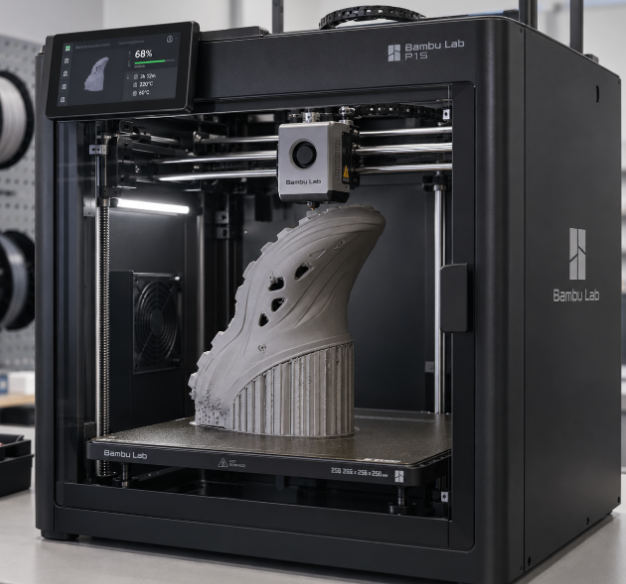
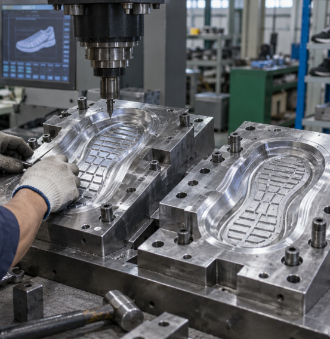
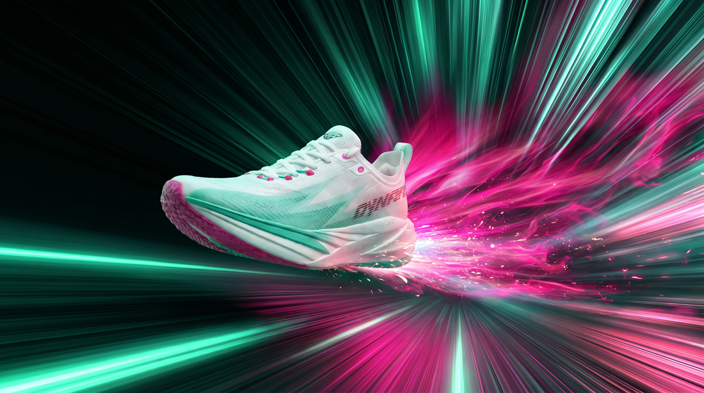

연구개발팀과 연구평가팀이 준비 중인 서비스를 팀 기준으로 정리했습니다. 각 카드는 실제 자료 폴더 위치와 1:1로 연결되며, 준비된 서비스는 클릭 시 상세 페이지로 이동합니다.

소프트, 하드한 소재까지 다양한 사이즈의 모델링을 3D 프린터로 출력해주는 서비스입니다.

샘플 및 생산 금형의 개발 시 디자이너 의견을 반영한 설계 검토 및 생산 품질 점검을 지원합니다.

AI와 3D 기술로 제품·컨텐츠를 디지털 이미지·영상·3D 모델로 구현합니다.
KLAB만의 대표 평가 프로그램입니다.
신발·의류 소재의 물성 및 내구성을 기계로 측정합니다.
실사용자 기반의 착용감·사용성 평가를 진행합니다.
실제 환경에서의 필드테스트를 통해 제품을 검증합니다.